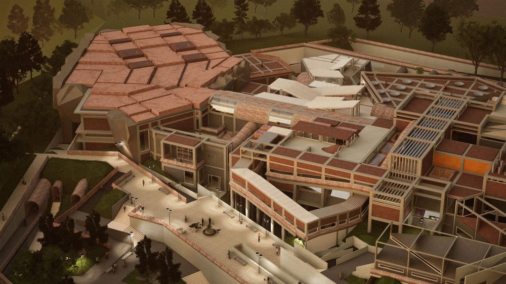
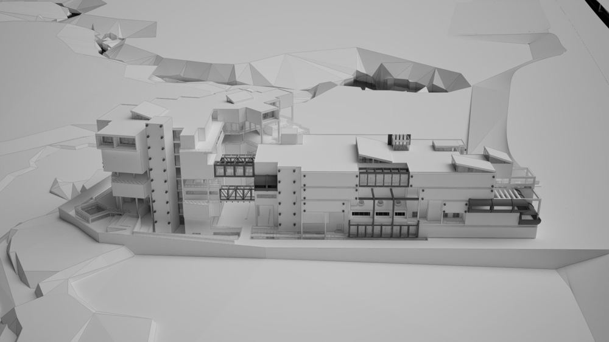
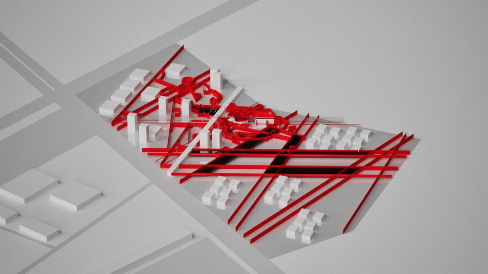
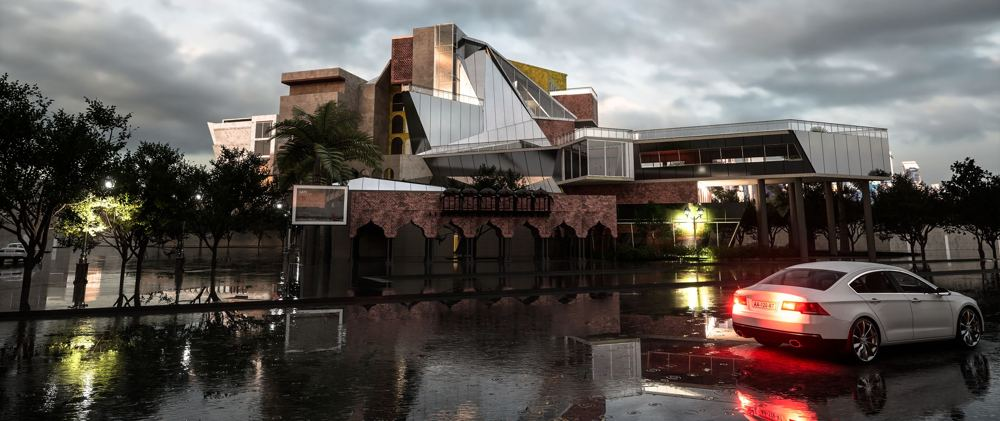
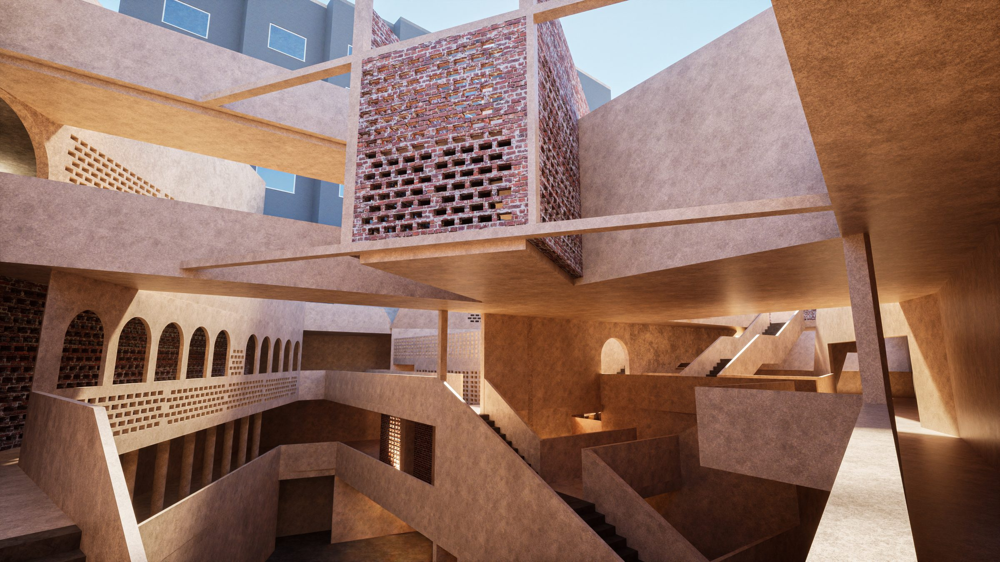
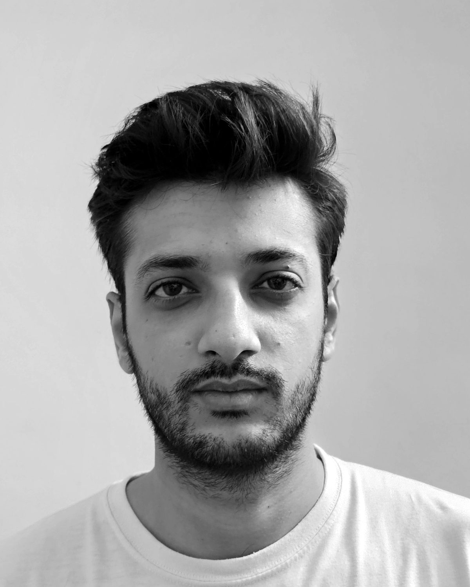

[work]
2023–2026Selected projects in cultural, healthcare, hospitality and urban design. More projects will be added here soon.

[01]A Tale of the Twin CitiesConcert hall, Shakarparian, Islamabad · B.Arch thesis
[02]The Architecture of Surgical Forms250-bed hospital, River Ravi, Lahore
[03]Form, Space, and UrbanismUrban housing society, Lahore · Best Studio Project 2024
[04]Hotel120-room hotel, Egerton Road, Lahore
[05]Cairo Culture CentreCulture centre, Egerton Road, Lahore · Selected for exhibition[research]
Instagram · YouTubeAlongside built and speculative work, the studio publishes ongoing research into architectural theory and tectonics.
[logic.series]
Short essays on form, syntax, complexity, originality and tectonics, built around simple questions that test assumptions architects rarely examine.
[read the series] →Architecture is not assembled. It is consequential.
Five dwelling prototypes that test tectonics, sustainability, kinetics, artificial intelligence and the human body as a structural participant.
Charpai Prototypes
Street furniture derived from the charpai, developed in steel, timber and concrete under a single principle: tectonic honesty, one mutation at a time.
[about]
The grid holds. The city ruptures it. The structure shows how it stands.
wajiasimstudio approaches architecture as a cultural and tectonic act: reading the order and disorder of the city, and expressing structure, material and joinery as part of the design.
[introduction]
I'm Wajahat Asim, an architectural designer from Rawalpindi. I'm the kind of person who keeps asking why until the answer runs out, and that habit shapes how I design, how I read and how I learn anything new. I think about architecture through philosophy, from Derrida and Nietzsche to the architects who took the discipline apart and rebuilt it: Peter Eisenman, Bernard Tschumi and Kenneth Frampton.
Outside the studio I play football, for years on the right wing and more recently in goal. I spend a lot of time with film, games and geopolitics, and all three keep me thinking about how rules, space and people shape one another.
[biography]
Wajahat Asim is an architectural designer and the founder of wajiasimstudio, based in Rawalpindi, Pakistan. He completed the International Baccalaureate Diploma before studying architecture at IAC Lahore.
His thesis, a concert hall for the twin cities of Islamabad and Rawalpindi, grew out of fieldwork in the streets of Androon Pindi, where he walked, photographed and spoke with the people who live there. It set Islamabad's planned grid against fragments of the old city, and was later published on ArchiDiaries.
He went on to work as Assistant Architect at Nasir Design in Islamabad on residential and institutional projects. Through wajiasimstudio he designs, writes and builds prototypes around critical theory, deconstruction and tectonics.

[architecture, to me, is not a finished object but a way of asking questions. i don't begin with a form and fit the building into it. the form comes out of the process, from testing an idea, breaking it and testing it again. each project becomes its own system with its own rules, sitting somewhere between the idea and the experience of the space. i want the work to stay open, to be read and reread rather than settled. architecture, for me, is a way of questioning the conditions it is built in, and how we live with what we build.]